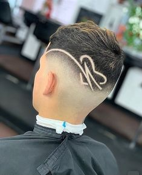
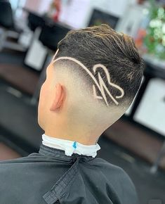

LA BARBERÍA

COLECCIONES
 

Ver Mas
SERVICIOS
Recervar TurnoCorte de Cabello
($3000 abonando en efectivo .) Corte de cabello con lavado incluido y productos para el cuidado del cabello. Todos nuestros servicios incluyen café expreso Segafredo o cerveza de cortesía.
Arreglo de Barba
($1000 abonando en efectivo.) Arreglo de barba con toalla caliente, afeitado a navaja y productos para el cuidado de piel y barba. Todos nuestros servicios incluyen café expreso Segafredo o cerveza de cortesía.
Corte de Cabello y Arreglo de Barba
($4000 abonando en efectivo.) Corte con lavado incluido y terminaciones a navaja. Arreglo de barba con toalla caliente y afeitado tradicional. Productos para el Cuidado del cabello y de la barba. Todos nuestros servicios incluyen café expreso segafredo o cerveza de cortesía.
Ver MásCONTACTO
Ver el mapa más grande